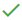
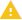
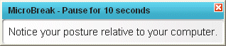

|
Statistic Name |
Statistic Description |
|||||||||||
|
Hours Using Computer |
How it’s calculated This statistic is calculated by measuring the time between when a first keystroke or mouse action occurs and when that activity ends (defined as when 30 seconds pass without any keyboard/mouse activity). During this time, RSIGuard considers the user to be "actively using the computer." For most people, only a fraction of their workday is actively using the keyboard/mouse. Hours on computer isn't the sum of mouse time and keyboard time, because time on computer can include time when you are exclusively using the keyboard or mouse as well as when you are going back and forth between mouse and keyboard. This diagram shows this concept:
For this reason, if your keyboard use is 2 hours and mouse use is 3 hours, you could have a computer time of anywhere from 3 hours (ME=1, K&M=2, KE=0) to 5 hours (ME=3, K&M=0, KE=2). How to use it This statistic is considered an indicator of risk. Any strains from posture, equipment, environment etc. are effectively multiplied by this value. It can be used to help prioritize who may need additional ergonomic support. A reasonable guideline is that Low use normally doesn’t require proactive attention (unless the lower use is due to discomfort). Average use requires a standard level of intervention. For Above Average or High use, self-assessment risk and other objectively risk factors (e.g. low break compliance) indicate an increasing need for attention. Users who report discomfort should receive additional support regardless of their daily exposure levels. ** An example José is high risk based on his OES self-assessment, but works on the computer for less than 1hr every day. In this case, José’s computer use is low enough that, unless he is reporting discomfort, he probably does not need further resources. Charisse self-assesses at medium risk. Her "hours using computer" is 4.1 and her administrator schedules an in-person evaluation to try to reduce the impact of that time on the computer. Ranges  Low < 1.7Average 1.7-3.9  Above Average 3.9-5.19High >5.19 |
|||||||||||
|
Overall Break Compliance
|
How it’s calculated This statistic indicates if you take enough breaks from computer work. It represents RSIGuard's calculation of how many breaks you took (both self-initiated "natural breaks" and BreakTimer-prompted breaks) divided by how many breaks RSIGuard calculated were needed (based on time and activity level).
How to use it This statistic is an important indicator of risk. Increasing the compliance value helps lower risk. Turning on or adjusting the settings of BreakTimer can help you achieve better Overall Break Compliance.
An example Since Rahul is reporting discomfort, he has been scheduled for an in-person evaluation. Before the ergonomist meets with him, she sees that his keyboard and mouse usage have 's, but that Overall Break Compliance has , despite having BreakTimer enabled. She sees that he takes short Natural Breaks, but only about one break longer than 4 minutes per day. Rahul reports that he has trouble stopping work and thus he skips most BreakTimer-suggested breaks. After discussion, they agree to set his “Willpower” setting to “Low” to cause BreakTimer to do more to enforce its break suggestions. Ranges Very good Compliance > 95% Good Compliance 75%-95% Moderate Compliance 50%-75% Low Compliance 25%-50% Very Low Compliance <25% |
|||||||||||
|
Desktop Usage Risk |
What is it? Desktop risk is a statistic that estimates your risk of developing discomfort. It is a function of:
What does it indicate? A lower value is associated with lower risk of discomfort, and a higher value is associated with greater risk. Lowering Desktop Risk can help lower your risk for discomfort. What can I do to decrease my Desktop Risk? Your risk can be lowered by reducing keyboard and mouse exposure (less time or fewer repetitions), and by improving break compliance. Understanding risk's relationship with average exposure: The desktop summary page you are viewing shows, by default, your average daily exposures. If your average daily usage is high, a statistic may show or . Your desktop risk may still be low, however, if you worked fewer days during the date range. By contrast, even if your exposures are mostly labeled , your Desktop Risk could be moderate or high if you work 6 or 7 days a week. Ranges Acceptable < 0.494 Potential Concern 0.494 - 0.610 Significant Potential Concern > 0.610 Note: In RSIGuard Desktop Risk Action Report, these values are presented X 100 (Acceptable is < 49.4, Potential Concern is 49.4-61.0, Significant Potential Concern is > 61.0) |
|||||||||||
|
BreakTimer Break |
How it’s calculated This statistic is the ratio of BreakTimer-suggested breaks that were completed to the total number that were suggested. For example, if BreakTimer suggests 4 breaks, and the user takes 2 of them and skips 2 of them, BreakTimer Break Compliance is 2/4 or 50%. Additionally, if the BreakTimer feature is off, this is considered non-compliant time. So the full formula is (% time BreakTimer is enabled) X (Breaks Taken) / (Breaks Taken + Breaks Skipped). Let's say you worked 4 hours and paused the BreakTimer for an hour. BreakTimer suggested 3 breaks during the 3 hours it was enabled. You took 2 of those and skipped the third. Then compliance would be (75%)X(2/(2+1))=50%.
This statistic indicates if a user is following the break schedule that RSIGuard suggests – this can either be a strict break schedule, or a more flexible break schedule, depending on RSIGuard’s settings. It provides deeper insight into the employee’s break-taking habits. Poor break compliance suggests that at times, the user has high exposure levels and isn’t taking breaks. Even if Overall Break Compliance is good, a low BreakTimer Break Compliance suggests that during some times of the day (probably higher stress times), the user may be under-resting. However, it is important to look at the absolute numbers as well. If BreakTimer only suggested 1 break and the user skipped it, their BreakTimer break compliance would be 0% -- even though their Overall Break Compliance might be acceptable. An example Since Renata is reporting discomfort, she has been scheduled for an in-person evaluation. Before the ergonomist meets with her, he sees that her Overall Break Compliance has a green check mark, but that her BreakTimer Break Compliance has a yellow dot. He looks further and sees that she typically skips 2 or 3 suggested breaks per day. When he meets with her, she says that she is usually working on something important when the BreakTimer pops up, so she ignores it – but that she knows she shouldn’t do that! He suggests that, since she is experiencing discomfort, she set the willpower setting on the BreakTimer lower, so that she is more likely to comply with the breaks. Ranges High > 75% Moderate 50%-75% Low <50% |
|||||||||||
|
BreakTimer Breaks Taken |
Represents the number of BreakTimer-prompted breaks taken. For example:
Interpreting this value: This value is only relevant if BreakTimer is enabled. Low values indicate that you didn't take many RSIGuard-suggested breaks. This could be because you took enough rest on your own (good), or that you skipped or postponed suggested breaks (not so good). If you want more breaks suggested, you can visit the BreakTimer settings to increase frequency or sensitivity, or adjust the maximum time allowed between breaks. |
|||||||||||
|
BreakTimer Breaks |
Represents the number of BreakTimer-prompted breaks skipped. For example:
Interpreting this value: This value is only relevant if BreakTimer is enabled. The lower the value, the better. If you see higher values it suggests you are skipping needed breaks. You can increase your compliance by adjusting BreakTimer settings to either make breaks fit your schedule better, or by increasing break enforcement (if you just need help forcing yourself to take breaks). |
|||||||||||
| % Time BreakTimer Enabled |
Depending on your configuration, you may be able to enable or disable the BreakTimer system in RSIGuard (either via the Settings or via the pause button on the front panel). This statistics tells the percentage of time you have the BreakTimer system enabled. Ideally, this should be 100%. Anything less than about 70% indicates that you spend a significant percentage of your time without the protection offered by BreakTimer. |
|||||||||||
|
Break length setting |
The duration of breaks. |
|||||||||||
|
Break interval settings |
The interval between BreakTimer Breaks. |
|||||||||||
| Willpower Setting |
A user's ability to respect the break timer settings. A higher willpower equals less strict enforcement, and a lower willpower equals stronger enforcement of settings.
|
|||||||||||
| Minimum Time Between Breaks, set to: |
This value reflects the minimum amount of time that must pass between breaks, regardless of break timer settings/suggestions. |
|||||||||||
| Maximum Time Between Break, set to: |
This value reflects the maximum time you can go without a break. Breaks will still occur more frequently of course if you build up strain. |
|||||||||||
|
Time Breaks Postponed |
When RSIGuard suggests breaks, if the break is interrupting work, you have the option of postponing the break 2 or 10 minutes. RSIGuard counts how many minutes you postpone breaks each day. This statistic tells the number of minutes. Although some postponing is reasonable, if you find you are postponing breaks more than about 5 minutes per break taken, consider adjusting your behavior. So, for example, if BreakTimer breaks taken is "5 breaks", and your time postponing breaks exceeds "25 minutes", consider if you really need to postpone each break. |
|||||||||||
|
Time Spent in Breaks |
BreakTimer breaks can be as short as a minute or two, and as long 5 or 10 minutes (or even longer if you use the Minute-by-Minute Work Restriction feature). This statistics tells how many minutes total you spend in the BreakTimer. For example, if you take 3 breaks, and each break is 4 minutes long, this statistic would report 12 minutes total. Compare this total to your total time on the computer. In general, standard recommendations suggest 5 to 10 minutes of break per hour for a typical computer user. |
|||||||||||
| Time Breaks Were Delayed |
Amount of time in seconds that BreakTimer-prompted breaks were delayed by filter, polite mode, postpone, etc. |
|||||||||||
| "Polite Mode" Break Delay |
Time spent waiting for a user to start break in polite mode. |
|||||||||||
|
Microbreak Compliance |
How it’s calculated Microbreak Compliance is the ratio of microbreaks taken (i.e. the user pauses for the suggested brief rest) to the number of microbreaks suggested by RSIGuard ForgetMeNots. While the microbreak feature is turned off, or paused via the front-panel pause button, you are not compliant. So the full formula is (% time Microbreaks is enabled) X (Microbreaks Taken) / (Microbreaks Taken + Microbreaks Skipped). Let's say you worked 5 hours and paused Microbreaks for an hour. ForgetMeNots suggested 12 microbreaks during the 4 hours it was enabled. You took 9 of those and skipped 3. Then compliance would be (80%)X(9/(9+3))=60%.
How to use it This statistic indicates how well a user is following RSIGuard’s suggested microbreak schedule, and provides additional insight into the employee’s break-taking habits. Try to comply with the ForgetMeNot microbreak suggestions, since they are timed to occur frequently when needed to prevent extended static posture exposures.
An example Since Elias is reporting discomfort, he has been scheduled for an in-person evaluation. Before the ergonomist meets with him, she sees that his Microbreak Compliance has an exclamation mark, but that his BreakTimer Break Compliance and Overall Break Compliance have green check marks. During the evaluation, he says that he thinks he takes enough breaks, since he takes all of the breaks suggested by BreakTimer. The ergonomist points out that, while he is taking frequent long breaks, he is not taking enough short breaks, and informs him of the value of microbreaks – and that they might help him reduce his discomfort.
Ranges High > 75% Moderate 50%-75% Low <50% |
|||||||||||
|
% of Time ForgetMeNots |
Percentage of time that the ForgetMeNots feature was enabled (as opposed to being turned off in settings, or from the pause button on the front panel). |
|||||||||||
|
ForgetMeNots Interval |
Length of time between ForgetMeNots (or microbreaks). |
|||||||||||
|
% Time Microbreaks |
Percentage of time that the Microbreaks feature is enabled (as opposed to being turned off in settings, or from the pause button on the front panel). |
|||||||||||
|
Microbreak Length |
Average length of time of microbreaks (the time of the pause that comes along with your ForgetMeNot message). |
|||||||||||
|
Microbreaks Taken: |
Average number of ForgetMeNot microbreaks taken. For example:
Interpreting this value: A typical user might see a value of 2 or higher. If you see a number lower than 2, it could mean:
 |
|||||||||||
|
Microbreaks Skipped: |
Average number of ForgetMeNot microbreaks skipped. For example:
Interpreting this value: This value is only relevant if microbreaks are enabled. The lower the value, the better. If you see higher values it suggests you need to pause when microbreaks are shown. You can increase your compliance by adjusting these settings in ForgetMeNots Advanced Settings:
|
|||||||||||
|
Natural Breaks |
These statistics tell how many breaks a user takes, with or without the help of BreakTimer or ForgetMeNots. Four break lengths are recorded: breaks of 15 or more seconds, 60 or more seconds, 4 or more minutes, & 15 or more minutes. So, a 17-minute break would be counted in all 4 statistics, and a 2-minute break would be counted in the 15 second and 60 second category. This statistic is an indication of a person's natural pattern of taking rest, especially whether they take their rests in short spurts or long chunks. An employee should be encouraged to take lots of short breaks throughout the day, with at least one or two 4+ minute breaks per hour of work. |
|||||||||||
|
>15 sec |
Number of breaks the user takes that are equal to or greater than 15 seconds in length (including breaks of 1 minute, 4 minutes, etc.) |
|||||||||||
|
>1 min |
Number of breaks the user takes that are equal to or greater than 1 minute in length (including breaks of 4 minutes, 15 minutes, etc.) |
|||||||||||
|
>4 min |
Number of breaks the user takes that are equal to or greater than 4 minutes in length (including breaks of 15 minutes, 20 minutes, etc.). |
|||||||||||
|
>15 min |
Number of breaks the user takes that are equal to or greater than 15 minutes in length. |
|||||||||||
|
Preemptive Breaks |
Represents the number of "Preemptive Breaks" taken. RSIGuard measures how much rest a user takes during the workday. It measures:
Preemptive breaks are natural breaks that a user takes that RSIGuard counts as "replacing the need for an upcoming break." The idea is, if you are sufficiently close to needing a break, and you take it without being prompted, your compliance will reflect that you took a break. A natural break is considered preemptive if your strain exposure level (the greater of mouse or keyboard strain) was:
|
|||||||||||
|
Longest Stretch Of Work |
The longest duration of work without a rest break. |
|||||||||||
|
2nd Longest Time w/o Rest |
The second longest duration of work without a rest break. |
|||||||||||
|
3rd Longest Time w/o Rest |
The third longest duration of work without a rest break. |
|||||||||||
|
Keyboard Usage |
How it’s calculated This statistic is calculated by noting the time when a first keystroke occurs, and noting when 30 seconds have passed without a single keystroke. During this time, RSIGuard considers the user to be "using the keyboard." How to use it This statistic helps determine a user’s exposure to the keyboard and can thus help balance ergonomic tradeoffs during an ergonomic assessment/improvement process relative to other factors. Unless the user has a work restriction, the goal isn’t to lower the value of this statistic. An example Since Maria is high risk, she has been scheduled for an in-person evaluation. Before the ergonomist meets with her, he sees that she has a green check mark next to Keyboard Usage, so he decides that keyboard use will be a low priority in the issues that he addresses with her and instead focuses on mouse positioning because mouse use is above average. Ranges Low to Average < 2.51 Above Average 2.51-3.53 High >3.53 |
|||||||||||
|
Keyboard Strain |
Keyboard strain is an estimate of the cumulative muscular strain associated with keypresses. How it’s calculated Each keypress or keypress combination has an associated estimated level of strain. Keys that are closer to home position or depend on more dominant fingers have lower strain values. Keys or key combinations that require more awkward hand postures (e.g., Ctrl+F7), or are more distant from home position (e.g., the F5 key), or depend on a stretch of a weaker finger (e.g., the 1 key), have higher strain values. Keyboard Strain Exposure is the sum of these values from all of your keypresses. Your keyboard strain will be somewhat correlated to number of keypresses, but it is not a direct function of keypress count or any other RSIGuard statistic.
How to use it This statistic is an indicator of risk. It estimates the strain you experience due to keyboarding, and can help determine how much to focus on improvements to: your keyboarding posture; which keyboard you use; and its placement on your desk. If your keyboard strain exposure is high, RSIGuard’s KeyControl feature can help by reducing repetitive typing activities or moving keypresses to easier-to-reach keys.
An example Since Yan is high risk, he has been scheduled for an in-person evaluation. Before the ergonomist meets with him, she sees that his Keyboard Strain Exposure is marked and that his Keyboard Usage time is also high. During the evaluation, she focuses on making sure that his keyboard is positioned properly, introduces him to KeyControl, and decides that ordering a better-fitting keyboard makes sense.
Ranges Low < 37 Average 37-69 Above Average 70-100 High >100 |
|||||||||||
|
Total Keypresses
|
How it’s calculated This statistic tells the raw number of keystrokes pressed without regard to which key is being pressed. For example, pressing Ctrl-A would add 2 keypresses to this statistic.
How to use it This statistic, which indicates how much a user is using the keyboard, can help determine the quantity of mitigation resources that should be focused on an at-risk employee’s use of the keyboard. It should not normally be a goal to lower this value (since this would directly limit an employee’s ability to work). However, KeyControl can be used to lower this value while maintaining or improving productivity. In extreme cases, a work restriction can be defined to limit the user to a particular level of keystrokes.
An example Since Laura is high risk, she has been scheduled for an in-person evaluation. Before the ergonomist meets with her, he sees that she has an exclamation icon next to Keypresses and that her Keyboard Usage is also high. During the evaluation, she tells him that she has seen the doctor a few times about extreme discomfort in her left hand, so he shows her how to enable KeyControl to replace left-handed use of the Tab key with a key she can press with the right hand.
Glossary of statistics below KeyControl hotkeys: Number of times that a KeyControl hotkey is used. Switches between keyboard & mouse: Number of times user switches from keyboard to mouse, or mouse to keyboard. Keypress force: Measured in proxy by the length of time that the keys are held down, this value provides a relative idea of how hard a user is pressing keys.
Ranges 18000 ≥ High 12300-17999 = Average 12299 ≤ Low Note: These ranges are a comparison to users in general, but this statistic is not rated as a potential risk with icons. |
|||||||||||
|
KeyControl hotkeys |
Count of times that all KeyControl hotkeys were used. |
|||||||||||
|
Switches between |
Number of times user switched from keyboard to mouse, or mouse to keyboard. |
|||||||||||
|
Keypress Force Estimate |
Measured in proxy by the length of time that the keys are held down, this value provides a relative idea of how hard a user is pressing keys. |
|||||||||||
|
Time Using Built-in |
Time spent using built-in laptop keyboard (as opposed to an external keyboard device connected). |
|||||||||||
|
Mouse Time
|
How it’s calculated This statistic is calculated by noting the time when mouse activity (moves, clicks or wheel-spin) starts, and noting when 30 seconds pass without mouse activity. During this time, RSIGuard considers this "time using the mouse".
How to use it This statistic is considered a key indicator of risk, so it should be one of the main statistics to focus on prior to applying mitigation resources. It indicates how much time a user spends using the mouse, and can help determine the quantity of mitigation resources that should be focused on an at-risk employee’s use of the mouse. Unless the user has a work restriction, the goal isn’t to lower the value of this statistic.
An example Since David is high risk, he has been scheduled for an in-person evaluation. Before the ergonomist meets with him, she sees that he has green check next to Mouse Usage. During the evaluation, she decides that with a limited budget, he needs a new keyboard, since he has high keyboard usage, and decides not to order him a new mouse even though it is not ideal for him. Ranges Low to Average < 3.78 Above Average 3.78-5.02 High >5.02 |
|||||||||||
|
Mouse Strain |
Mouse strain is an estimate of the cumulative muscular strain associated with mouse activity. Overview Mouse strain is an estimate of your muscular strain from using your pointing device based on number of repetitions and the type of mousing you do. The estimates are based on research that measured muscle activity experienced by people doing various activities with their pointing device. Exposure to mouse strain may be a part of your job. But there are many ways to reduce mouse strain or reduce its impact.
In addition to these recommendations, complete your ergonomic training and follow the guidance on your To Do List on the Issues Resolution tab for additional suggestions to help you work comfortably and reduce your risk of injury How it’s calculated Mouse Strain is calculated as a function of the types and frequency of mouse movement, duration of mouse button usage, number of clicks, drag & drops, and wheel scrolling. Ranges Low < 37 Average 37-69 Above Average 70-100 High >100 |
|||||||||||
|
Clicks |
A count of how many times each of the specified types of click occurred. | |||||||||||
Left Clicks |
Number of left mouse clicks performed by the user (does not include AutoClicks). |
|||||||||||
Right Clicks |
Number of right mouse clicks performed by the user. |
|||||||||||
|
AutoClicks |
Number of clicks performed by AutoClick. |
|||||||||||
|
Double Clicks |
Number of double clicks performed by the user. |
|||||||||||
|
Middle Clicks |
Number of middle mouse clicks performed by the user. |
|||||||||||
|
Scrollwheel |
Each "click" of the scrollwheel is one point. (Note: the term "click" for this statistic does not refer to a mouse click, but rather the rotation of the scroll wheel from one detent to the next). |
|||||||||||
|
Mouse Movement |
Approximate distance (in meters) that the mouse is moved on the mousing surface |
|||||||||||
|
Manual drag & drops |
Number of times the user performs the drag & drop function (holding the mouse button down while moving the mouse). |
|||||||||||
|
KeyControl drag & drops |
Number of times the drag & drop function is performed using KeyControl. |
|||||||||||
|
Time Using Built-in Pointer |
For notebook computers, the amount of time the user used the built-in pointing device (as opposed to an external device). |
|||||||||||
| Primary Computer Type |
This will display your computer type as the system recognizes it, Laptop, Desktop, etc. |
|||||||||||
|
Number of Monitors |
Number of monitors utilized by the user. |
|||||||||||
|
|
|
|||||||||||
| Autoclick Enabled |
Tells if the AutoClick feature is enabled. |
|||||||||||
| User-Defined Hotkeys |
Tells the number of hotkeys that a user has defined. |
|||||||||||
| Work Restriction, set to: |
Indicates the status of the work restriction feature. |
|||||||||||
| Daily Restriction, set to: |
If a daily limit on total hours is in effect, this tells how many hours. |
|||||||||||
| Minute By Minute Restriction, set to: |
If a minute-by-minute restriction is set, this gives the limit (e.g. 45 minutes of computer work per 60 minutes). |